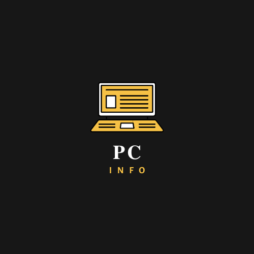

About This Website
My name is Dhruv Harish and I have coded this website using HTML. In this website, you can find different topics to learn about, such as, How to build a PC, What parts are Best for your PC, and
Commonly asked questions about your PC. Hopefully this website is helpful and you learn something new.

Works Cited
Coppock, Mark. “How to Choose a Graphics...”
Newegg Insider, Newegg Insider, 10 May 2019, www.newegg.com/insider/how-to-choose-graphics-card/.EZMarketing.
12 Answers to Common Computer Questions You’re Afraid to Ask - EZComputer Solutions. 9 June 2020, www.ezcomputersolutions.com/blog/answers-to-common-computer-questions/. Accessed 24 Oct.2022.
“How to Choose a Gaming CPU.” Intel, 2019, www.intel.sg/content/www/xa/en/gaming/resources/gaming-cpu.html. Accessed 24 Oct. 2022.“Top 10 Reasons to Use Liquid Cooling vs Air Cooling in Your Gaming PC.” Www.hp.com, www.hp.com/sg-en/shop/tech-takes/post/10-reasons-use-liquid-cooling-vs-air-cooling-gaming-pc.